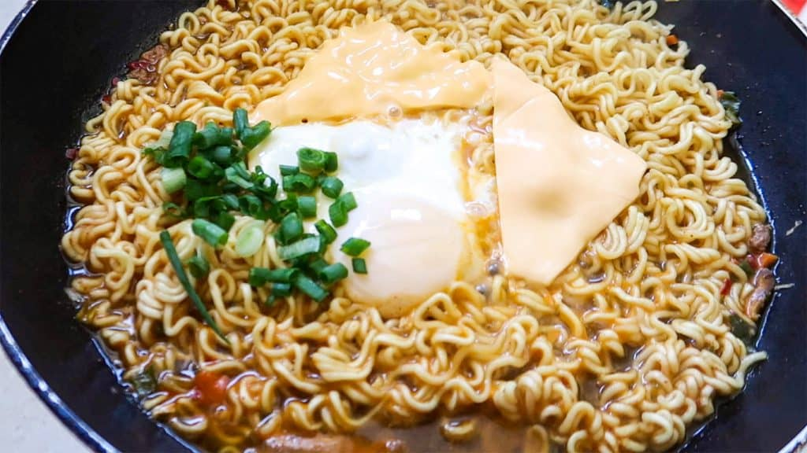

Ramen!!🍜

Description
This Ramen recipe comes from a Japan ese Comic Series called "Furutto". In one
stories, the character makes ramen in a frying pan. The recipe blew up on tik tok
due to its funny nature and relatible ingredients. It uses a well know ramen
"Shin Ramen" as its base with melted american cheese and a runny poached egg on top.
Ingredients for this recipe
- One packed of Shin Ramen
- One egg
- One slice of american cheese
- One stalk of green onion
Steps for the ramen! 🍜
- Add water to a pot and bring it to a boil
- Once boiling drop the egg into the pot and cook for around 5 minutes
- Once 5 minutes have passed keep cooking the egg for another minute and a half but take a mug of water from the pot
- Pour the mug of water into the frying pan and bring it to a boil
- Over a medium heat add the shin ramen noodles and gradually break it up
- Let it cook for about two minute
- Add half of the seasoning packet to the noodles
- Take out the egg from the pot and put in a cold water bath
- Now add the cheese on top of the ramen
- Cook for another 15 seconds and serve!
Home